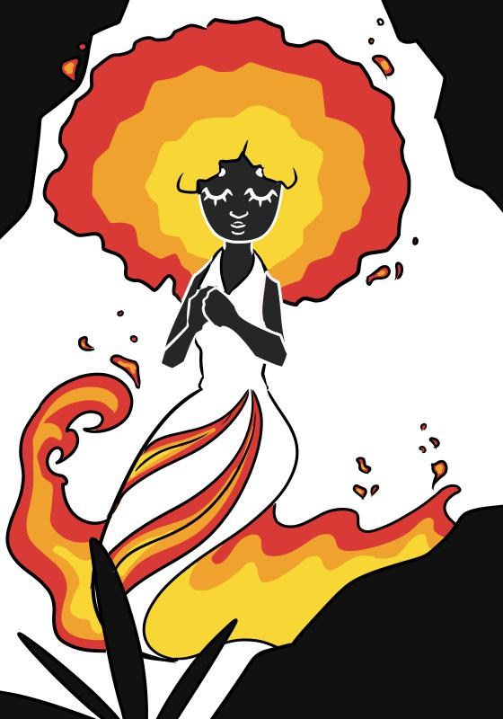
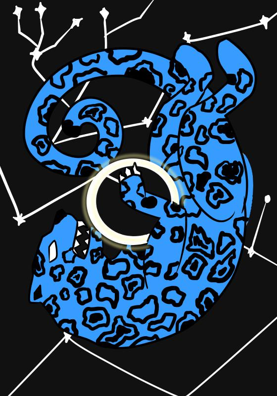

Encourado
O encourado é um mito do sertão nordestino, recebe esse nome por vestir roupas de couro e é considerado o "vampiro brasileiro".
Saiba mais
Mãe D'Ouro
A Mãe D'Ouro é uma lenda típica de regiões mineradoras, considerada como guardiã dos tesouros naturais.
Saiba mais
Boiúna
A boiúna faz parte do folclore amazônico e é caracterizada como uma cobra gigante capaz de virar embarcações.
Saiba mais

Mapinguari
O mapinguari faz parte do folclore amazônico e é uma enorme criatura que ataca nas florestas.
Saiba mais
Onça Celeste
A Onça-Celeste é uma personagem da mitologia tupi-guarani, é uma enorme onça responsável pelos eclipses.
Saiba mais